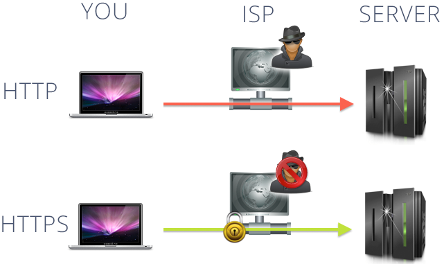
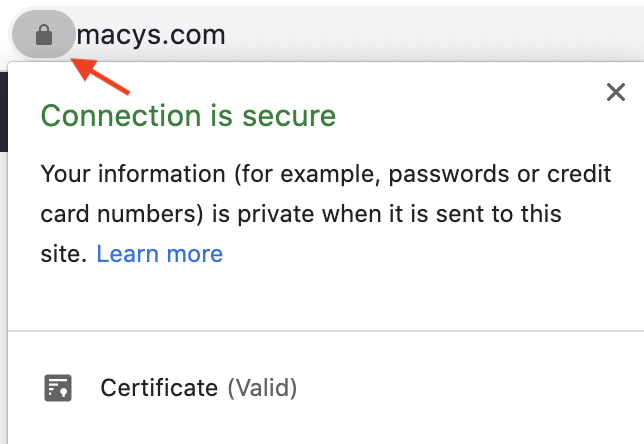

Seguridad en la web
Protocolo HTTPS
¿Qué es HTTPS?
El protocolo de transferencia de hipertexto seguro (HTTPS) es una versión segura del protocolo HTTP que utiliza el SSL /TLS protocolo para cifrado y autenticación. HTTPS está especificado por RFC 2818 (Mayo de 2000) y utiliza el puerto 443 de forma predeterminada en lugar del puerto 80 de HTTP.
El protocolo HTTPS hace posible que los usuarios del sitio web transmitan datos confidenciales como números de tarjetas de crédito, información bancaria y credenciales de inicio de sesión de forma segura a través de Internet. Por esta razón, HTTPS es especialmente importante para asegurar actividades en línea como compras, banca y trabajo remoto. Sin embargo, HTTPS se está convirtiendo rápidamente en el protocolo estándar para todos sitios web, ya sea que intercambien o no datos confidenciales con los usuarios.
Diferencias con HTTP
HTTPS agrega cifrado, autenticación e integridad al protocolo HTTP:
Encriptación
Debido a que HTTP se diseñó originalmente como un protocolo de texto claro, es vulnerable a las escuchas y hombre en el medio ataques. Incluyendo SSL /TLS cifrado, HTTPS evita que los datos enviados a través de Internet sean interceptados y leídos por un tercero. Mediante criptografía de clave pública y SSL /TLS apretón de manos, una sesión de comunicación cifrada se puede configurar de forma segura entre dos partes que nunca se han reunido en persona (por ejemplo, un servidor web y un navegador) mediante la creación de una clave secreta compartida.
Autenticación
A diferencia de HTTP, HTTPS incluye una autenticación sólida a través de SSL /TLS protocolo. SSL de un sitio web /TLS certificado incluye una Llave pública que un navegador web puede usar para confirmar que los documentos enviados por el servidor (como páginas HTML) han sido firmados digitalmente por alguien que posee el correspondiente llave privada. Si el certificado del servidor ha sido firmado por un autoridad de certificación (CA), como SSL.com, el navegador aceptará que cualquier información de identificación incluida en el certificado haya sido validada por un tercero de confianza.
Los sitios web HTTPS también se pueden configurar para autenticacion mutua, en el que un navegador web presenta un certificado de cliente que identifica al usuario. La autenticación mutua es útil para situaciones como el trabajo remoto, donde es deseable incluir autenticación multifactor, lo que reduce el riesgo de suplantación de identidad u otros ataques relacionados con el robo de credenciales.
Integridad
Cada documento (como una página web, imagen o archivo JavaScript) enviado a un navegador por un servidor web HTTPS incluye una firma digital que un navegador web puede usar para determinar que el documento no ha sido alterado por un tercero o corrompido de otra manera mientras está en tránsito. El servidor calcula un hash criptográfico del contenido del documento, incluido con su certificado digital, que el navegador puede calcular de forma independiente para demostrar que la integridad del documento está intacta.
Información proporcionada por HTTPS
Las autoridades de certificación usan tres básicos métodos de validación al emitir certificados digitales. El método de validación utilizado determina la información que se incluirá en el SSL /TLS certificado:
- Validación del dominio (DV). Simplemente confirma que el nombre de dominio cubierto por el certificado está bajo el control de la entidad que solicitó el certificado.
- Organización / Validación Individual (OV / IV). Los certificados incluyen el nombre validado de una empresa u otra organización (OV), o una persona individual (IV).
- Extended Validation (EV). Los certificados representan el estándar más alto en la confianza de Internet y requieren el mayor esfuerzo de la CA para validar. Los certificados EV solo se emiten a empresas y otras organizaciones registradas, no a individuos, e incluyen el nombre validado de esa organización.
Motivos para usar HTTPS
Integridad y autenticación
A través del cifrado y la autenticación, HTTPS protege la integridad de la comunicación entre un sitio web y los navegadores de un usuario. Sus usuarios sabrán que los datos enviados desde su servidor web no han sido interceptados y / o alterados por un tercero en tránsito. Y, si ha realizado una inversión adicional en certificados EV u OV, también podrán decirle que la información realmente vino de su negocio u organización.
Privacidad
Por supuesto, nadie quiere que los intrusos saquen sus números de tarjeta de crédito y contraseñas mientras compran o realizan operaciones bancarias en línea, y HTTPS es excelente para evitar eso. Pero tu realmente desea que todo lo que vea y haga en la web sea un libro abierto para cualquiera que tenga ganas de espiar (incluidos los gobiernos, los empleadores o alguien que construya un perfil para anonimizar sus actividades en línea) HTTPS también juega un papel importante aquí.
Experiencia de usuario
Los cambios recientes en la interfaz de usuario del navegador han provocado que los sitios HTTP se marquen como inseguro. ¿Quiere que los navegadores de sus clientes les digan que su sitio web "No es seguro" o les muestre un candado tachado cuando lo visitan? ¡Por supuesto no!
Compatibilidad
Los cambios actuales del navegador están empujando a HTTP cada vez más cerca de la incompatibilidad. Mozilla Firefox anunció recientemente un opcional Modo solo HTTPS, mientras que Google Chrome se está moviendo constantemente a bloquear contenido mixto (Recursos HTTP vinculados a páginas HTTPS). Cuando se ve junto con las advertencias del navegador de "inseguridad" para los sitios web HTTP, es fácil ver que la escritura está en la pared para HTTP. En 2020, todos los principales navegadores y dispositivos móviles actuales son compatibles con HTTPS, por lo que no perderá usuarios al cambiar de HTTP.
SEO
Los motores de búsqueda (incluido Google) usan HTTPS como señal de clasificación al generar resultados de búsqueda. Por lo tanto, los propietarios de sitios web pueden obtener un impulso SEO fácil simplemente configurando sus servidores web para usar HTTPS en lugar de HTTP.
¿Como funciona HTTPS?
HTTPS agrega cifrado al protocolo HTTP envolviendo HTTP dentro del SSL /TLS protocolo (razón por la cual SSL se denomina protocolo de túnel), de modo que todos los mensajes se cifran en ambas direcciones entre dos computadoras en red (por ejemplo, un cliente y un servidor web). Aunque un fisgón todavía puede acceder potencialmente a direcciones IP, números de puerto, nombres de dominio, la cantidad de información intercambiada y la duración de una sesión, todos los datos reales intercambiados están encriptados de forma segura por SSL /TLSque incluyen:
- URL de solicitud
- Contenido del sitio web
- Parámetros de consulta
- Encabezados
- Cookies
HTTPS también usa SSL /TLS como protocolo para autenticación. SSL /TLS utiliza documentos digitales conocidos como Certificados X.509 para unir criptografía pares de llaves a las identidades de entidades como sitios web, individuos y empresas. Cada par de claves incluye un llave privada, que se mantiene seguro, y un Llave pública, que se puede distribuir ampliamente. Cualquier persona con la clave pública puede usarla para:
- Enviar un mensaje que solo el poseedor de la clave privada puede descifrar.
- Confirmar que un mensaje ha sido firmado digitalmente por su clave privada correspondiente.
Si el certificado presentado por un sitio web HTTPS ha sido firmado por una autoridad de certificación de confianza (CA), Tales como SSL.com, los usuarios pueden estar seguros de que la identidad del sitio web ha sido validada por un tercero confiable y rigurosamente auditado.
Consecuencias de no emplear HTTPS
En 2021, los sitios web que no usan HTTPS ni sirven contenido mixto (que sirven recursos como imágenes a través de HTTP desde páginas HTTPS) están sujetos a advertencias y errores de seguridad del navegador. Además, estos sitios web comprometen innecesariamente la privacidad y seguridad de sus usuarios y no son los preferidos por los algoritmos de los motores de búsqueda. Por lo tanto, los sitios web HTTP y de contenido mixto pueden esperar más advertencias y errores del navegador, menor confianza del usuario y un SEO más pobre que si hubieran habilitado HTTPS.
Como saber si un sitio web usa HTTPS
Una URL HTTPS comienza con https:// en lugar de http:// Los navegadores web modernos también indican que un usuario está visitando un sitio web HTTPS seguro al mostrar un símbolo de candado cerrado a la izquierda de la URL:
En los navegadores modernos como Chrome, Firefox y Safari, los usuarios pueden hacer clic en el candado para ver si el certificado digital de un sitio web HTTPS incluye información identificativa sobre su dueño.